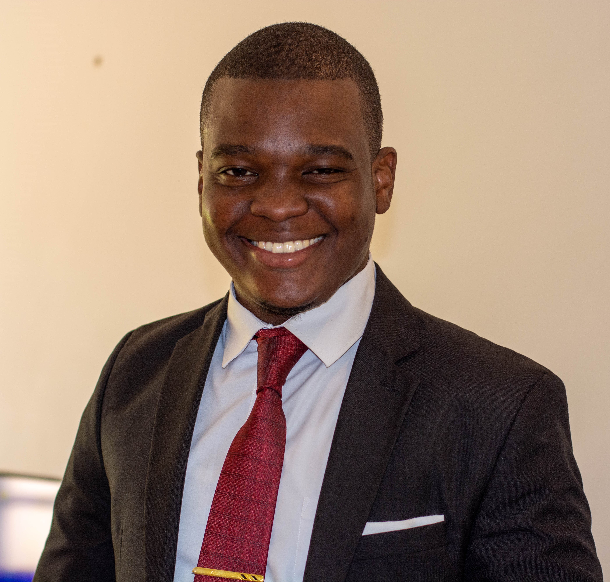

Personal details
Name: InterestsFitness Music Voluntary work International business matters SkillsLeadership Presenting Communicating Organising Collaborating LanguagesShona English |
Curriculum Vitae for Joshua Anthony MasundahProfileA young transformational leader who is passionate about bringing in positive change in Zimbabwean communities, building pillars of the society and seeing our African continent thrive. Professional Experience
Duties and Responsibilities
Education and QualificationsHarare Institute of Technology
Lindnet Institute of Technology
Skill Set
Reference
|
This is my StoryIn a nutshell, I would say I am a young transformational leader who is passionate about bringing in positive change in my Zimbabwean communities, building pillars of the society and seeing our African continent thrive. That is why I plan on majoring in social entrepreneurship after completing my Computer Science degree program and becoming a community leader one day. From the outset I have always been interested in leadership because I believe that leadership must be force for positive change in the communities in which we live in. My strength is the ability to learn faster and acclimatize to the new systems of our world today. What I am always looking for are new opportunities to expand my knowledge base and to connect with the people from different walks of life around the world to share new ideas and solutions that can bring about change and put an end to some of the most pressing issues of Africa today. Ever since I was admitted into university, I have wanted to become a problem solver and impact the world around me through new ideas which are produced by the new way of thinking that is present today. Impacting my Zimbabwean communities and the Globe at large for me is not possible without putting in the work, effort to learn, joining hands with others and embracing the wonderful gift of technology. I believe this scholarship will help me put my best foot forward in impacting the world around me, finish the work that has already began in me and ensuring that as a young African leader I provide feasible solutions to the problems in my country with the right skills that I would have learned from the program. One of my ultimate goals is to become a social entrepreneur. One of the pressing issues in Zimbabwe and Africa as well is that we have over 70 000 students coming out of university every year and yet they are no jobs for them. I believe one of the main things that we need to look at is how can we create jobs for these youths and one of the areas that I am looking at is social entrepreneurship, making the communities work for itself instead of relying and depending on the governments and other agencies that they look out for help. Social entrepreneurship looks at how we can empower, how can we help the people, how can we assist them and help them rise from being dependent on luck which creates all sorts of challenges for them. I deeply believe in my heart that everyone has a role to play in making our world a place and this is why I am very much inclined to the idea of empowering every young adult for the betterment of our society. It is also my career goal to become a community leader one day. Community leaders are necessary people that will drive and influence people to be able to accept responsibility for their lives first and also accept responsibility for the community. So Community leaders play a vital role if Africa is to be changed in the way that we think |